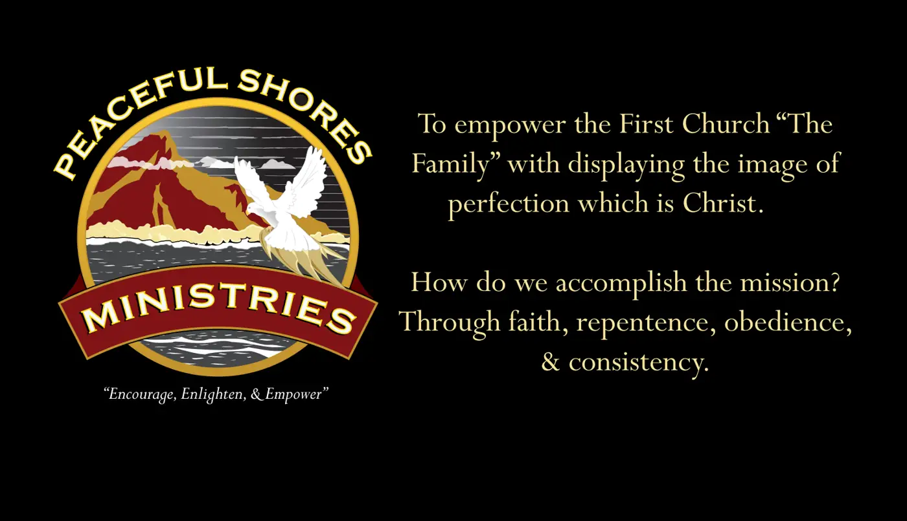
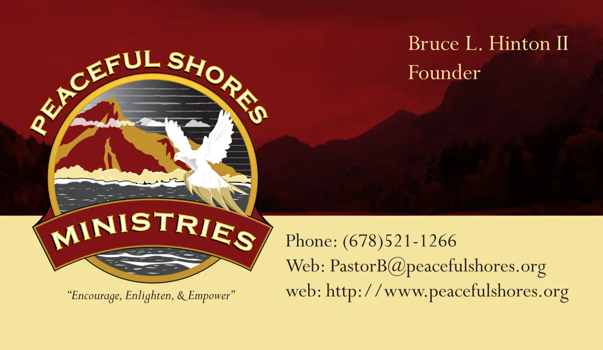
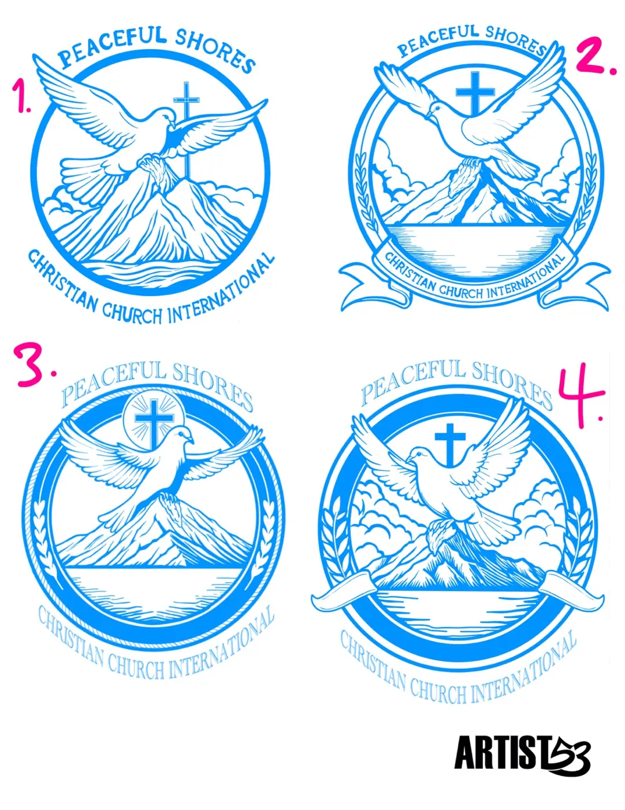
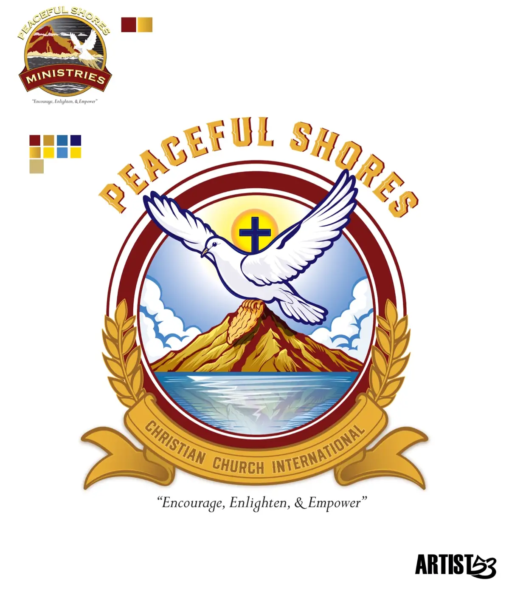
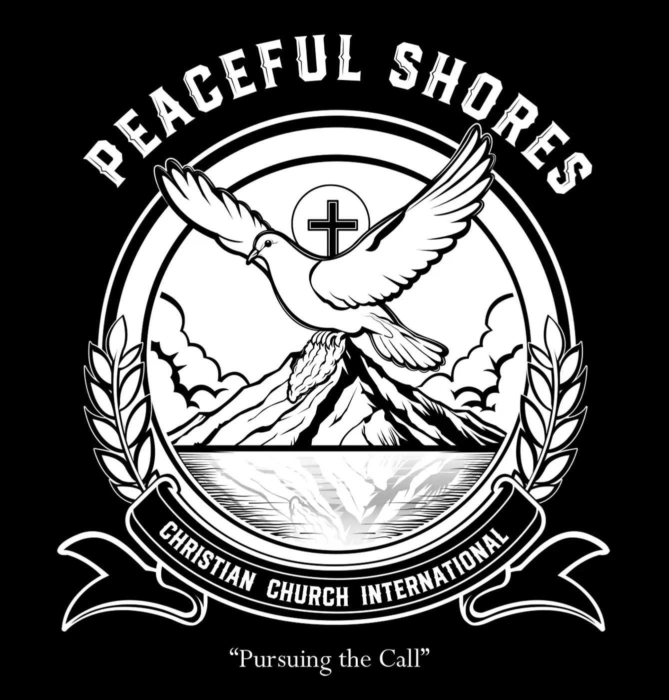
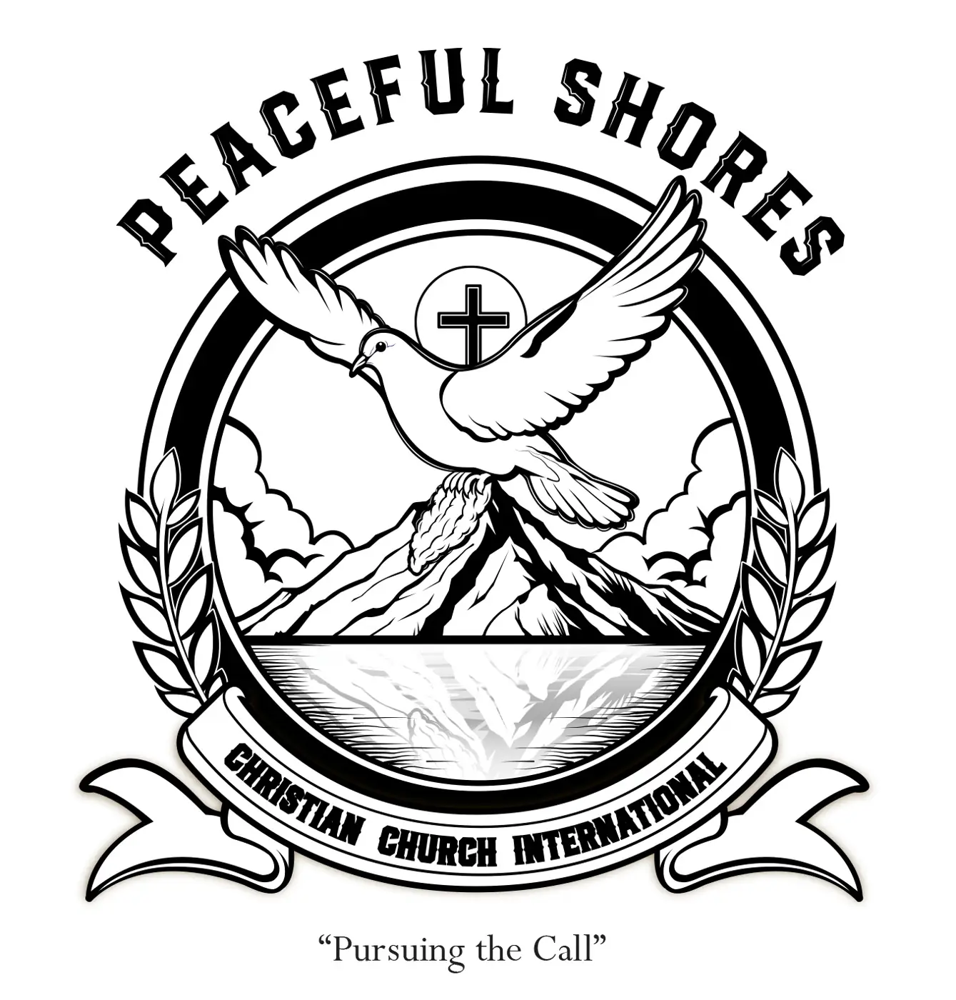

Logo Design Case Study
Peaceful Shores
The evolution of an identity I originally created years ago. This redesign gave me the opportunity to preserve the heart of the first logo while improving its structure, balance and long-term versatility.
View The ProjectBack To Logos
The Project
Faith, Hope And Spiritual Guidance In One Mark
Peaceful Shores Christian Church International needed an illustrative logo built around a circular emblem. The logo features a white dove above a gold mountain peak carrying a golden fleece. A cross and rising sun sit behind the dove, while blue ocean water reinforces the church’s name and the sense of peace at the center of the identity.
The project combined traditional drawing methods with Adobe Fresco. The selected design was then rebuilt in Adobe Illustrator as clean vector artwork prepared for professional printing and long-term use.
The Original Identity
Where The Story Started
Before the current redesign, I created the original Peaceful Shores Ministries identity from sketches through the final vector logo. That first mark became part of the church’s visual presence and was used across ministry messaging and printed materials.


Concept Exploration
Exploring New Directions
I tested several compositions before committing to the final direction. Changes to the dove, ribbon, wreaths, typography and surrounding frame created very different levels of movement, balance and readability.

Four concept directions developed before the final design was selected and refined.
Color Development
Building The Final Palette
The updated palette carries forward the warmth of the original identity while expanding it with stronger blues, gold, burgundy and supporting tones. The full-color artwork was designed to feel rich and illustrative while remaining organized inside a strong emblem structure.

Original identity reference, expanded color palette and the refined full-color direction.
Logo Versatility
Strong With Or Without Color
A detailed illustrative logo still needs to work when color is removed. These black-and-white versions test the design through shape, contrast and composition alone.


Final Identity
Peaceful Shores Christian Church International
The final artwork keeps the story and symbolism of the original identity while presenting it with a stronger hierarchy, cleaner framing and a more balanced overall silhouette.
Final full-color vector identity created for print and digital use.
Looking Back
Growth Becomes Part Of The Work
Redesigning it years later gave me the opportunity to keep the heart of the original while improving its structure and balance.
That’s one of the things I enjoy most about design. Every project teaches you something that makes the next one better. Looking back at older work reminds you how much you’ve learned, how much you’ve improved, and why it’s important to keep creating.